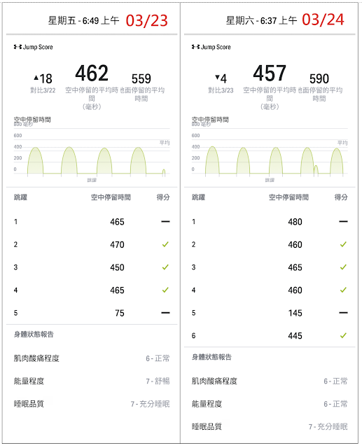
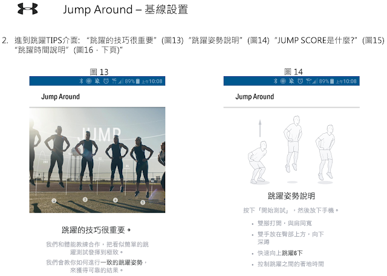
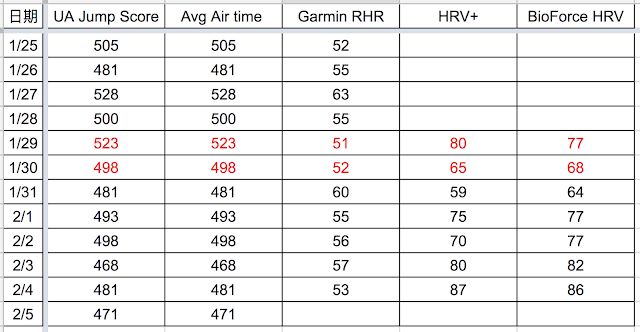
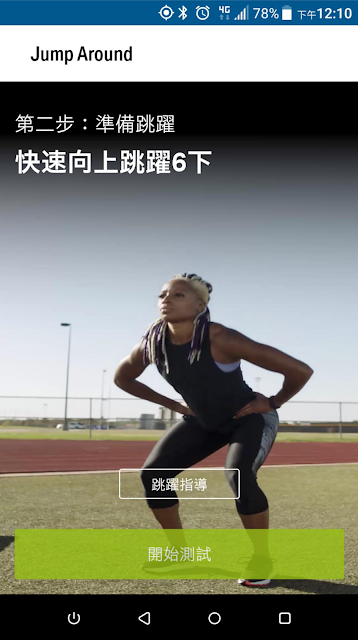
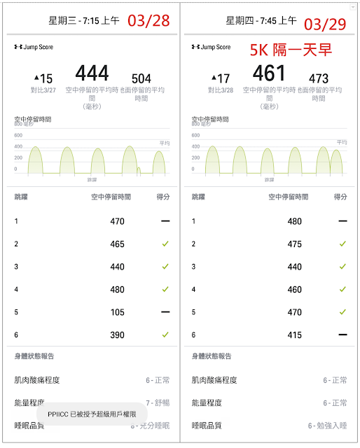
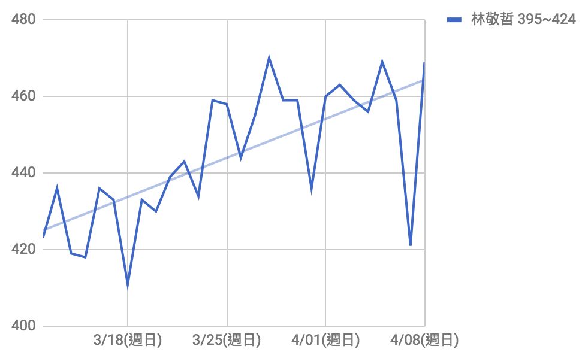
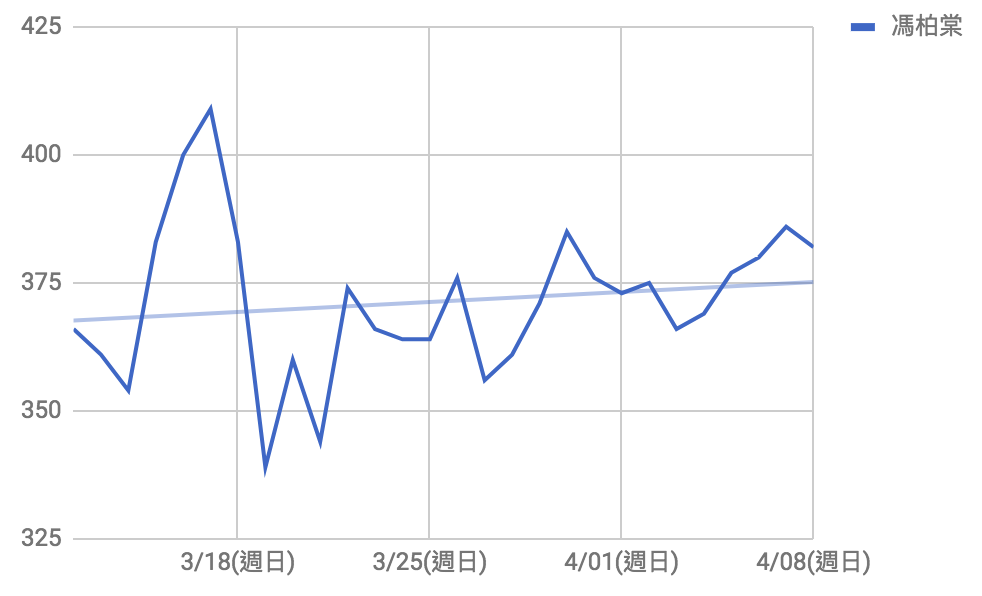
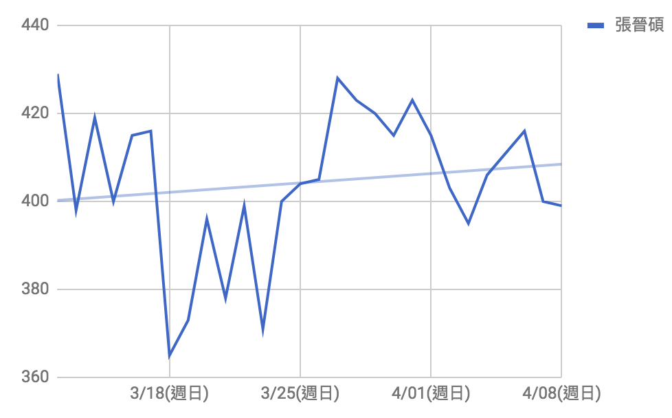
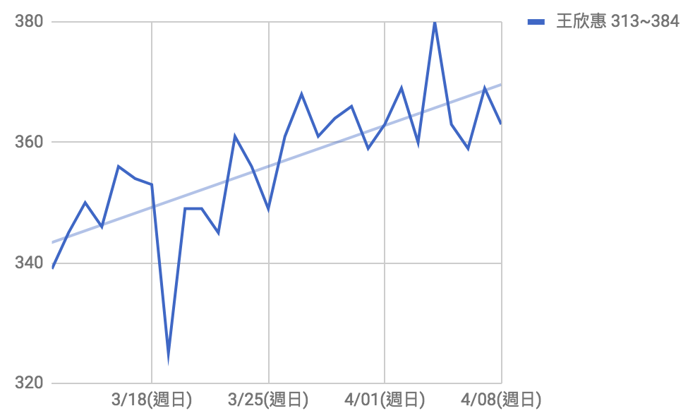
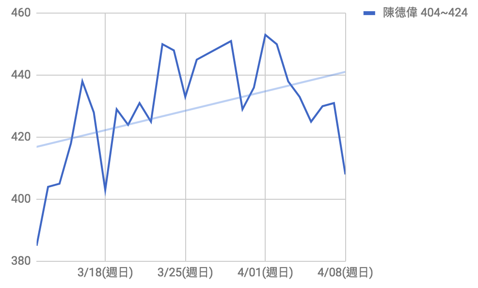

量化疲勞：嚴肅跑者完成全馬後，肌肉的疲勞需要幾天才能完全恢復？
之前讀到不少次關於神經與肌肉的疲勞可以用垂直跳躍的高度或騰空時間來量化的文獻，所以當今年初剛拿到UA HOVR這雙跑鞋時，最感興趣的就是它可以連結MapMyRun這款APP，運用它裡面的「Jump Test」來監控疲勞的功能。
Jump Test的定義很簡單：在雙手叉腰的情況下盡力向上跳時停留在空中的時間，每次檢測要跳六次，系統會挑選最接近的四筆數據來計算停留在空中的平均時間，名為Jump Score，單位是毫秒。

在沒有特別訓練肌力的情況下，垂直跳的騰空時間不太會改變，但當疲勞累積之後，時間就會「變短」。因此先設立目前騰空時間的「基線」(Baseline)就是監控疲勞程度的第一步。基線的設立方式是：在一週內至少要有三天進行垂直跳的檢測，系統會取這三次數據當作基線。當然，這一週最好不要有太大的訓練量。

跳躍的動作也有規範。在垂直跳時，擺手、起身與聳肩的技術高低會大大影響跳躍的高度，為了減少落差，所以APP中有圖示，每次測試前也有運動員示範，類示提醒跳躍動作的功能，這方面還做得相當細膩。此外，每次跑鞋連接APP也很快，幾乎一打開APP中的Jump Test功能，跑鞋就連上了。目前的缺點是APP必須連接到HOVR跑鞋後才能看到過往的數據，這是個人認為目前比較不合理的設定。
UA Jump Test 的介紹影片：
花了一段時間測試之後，覺得數據很準也很穩定。從1/25到2/5這段時間裡，我每天都在同一時間進行Jump Test的測試，同時紀錄Garmin的靜息心率與兩款心率變異度量測APP (分別是HRV+與BioForce HRV)，我想尋找它們之間是否有關聯性，得到的數據如下圖：

1/29那天是訓練量最大的日子，訓練前量到的數字都較高，隔天早上的Jump Score、HRV都明顯下降了，但安靜心率卻沒什麼變，直到再隔一天後再大幅上升！
這個簡單的自我數據研究，勾起了我對量化疲勞的興趣，所以就跟UA申請了幾雙跑鞋，請幾位準備接著參加萬金石馬拉松的Garmin PB班的學員來幫忙做測試，一開始主要是想研究的論題是：〈跑完42.195公里全馬的跑者需要幾天才能完全恢復到之前的騰空時間〉，但後來發現了其他有趣的現象。
先說最終結果：原本預估要7~14天才能恢復到全馬比賽前的身體狀況，但受試者中如果在全馬比賽中是「盡力」完成者，大都在4~5天之後就恢復到原本的跳躍高度了，而且循問跑者本身的自我感受，也都提到4~5天之後肌肉的疲勞就完全消失了。 _(_ PS 部分受試者因為個人因素而無法在萬金石的全馬賽事中盡力完賽，所以就不列入此項分析。 _)_
【下面是受試跑者的心得回饋與數據分析】
_馮柏棠_
馮柏棠 | 3/12 | 3/13 | 3/14 | 3/15 | 3/16 | 3/17 | 3/18 | 3/19 | 3/20 | 3/21 | 3/22
---|---|---|---|---|---|---|---|---|---|---|---
Jump
Score | 366 | 361 | 354 | 383 | 400 | 409 | 383 | 339 | 360 | 344 | 374
其中一位受試著柏棠在萬金石前一個多月的渣打馬拉松(1/28)跑出3小時44分，一個半月後的萬金石因為氣溫高，實力無法有效表現出來 (成績4小時02分)。萬金石的平均心率(165 bpm)高於渣打馬的平均心率(161)，但渣打馬配速卻比萬金石快，前者5:17/km，後者5:43/km。從這些數據可以看得出來萬金石也跑得相當賣力！
雖然萬金石的路線較多起伏，不過僅管如此，柏棠回饋到：萬金石全馬完賽後的第四天就腿部肌肉沒有任何不適感了！這跟Jump Score所反應出來的數據相當一致！ 3/18萬金石比賽之後的第四天，Jump Score就跳出374的數據，回到比賽前的水準。
--
_張晉碩_
張晉碩 | 3/12 | 3/13 | 3/14 | 3/15 | 3/16 | 3/17 | 3/18 | 3/19 | 3/20 | 3/21 | 3/22 | 3/23 | 3/24 | 3/25 | 3/26 | 3/27 | 3/28
---|---|---|---|---|---|---|---|---|---|---|---|---|---|---|---|---|---
Jump
Score | 429 | 398 | 419 | 400 | 415 | 416 | 365 | 373 | 396 | 378 | 399 | 371 | 400 | 404 | 405 | 428 | 423
晉碩回饋：「3/18的數據是完成全馬的比賽後測出的，但賽後的數據皆是每天起床後測。比賽後，大腿、小腿、臀部都會痠痛，狀況約3-4天後一天比一天好轉，約6-7天後才完全恢復至正常狀況！而且賽後每天皆有滾筒按摩與伸展至少30分鐘以上。」
萬金石完賽後測出的Jump Score是：365，相較於賽前一天的數據：416，下降了51。
比賽後兩週共14天總共只跑了10公里(RQ在這兩週總計的訓練指數為26)，因此可以當作接近全休的狀態下，Jump Score在賽後第四天(3/22)恢復到399，接近賽前的幾次數據。
--
_徐佑昇_
徐佑昇 | 3/12 | 3/13 | 3/14 | 3/15 | 3/16 | 3/17 | 3/18 | 3/19 | 3/20 | 3/21 | 3/22 | 3/23
---|---|---|---|---|---|---|---|---|---|---|---|---
Jump
Score | 456 | 465 | 457 | 453 | 475 | 458 | 459 | 418 | 421 | 439 | 444 | 462
另一位受試者佑昇，也盡全力完成了萬金石的全馬賽事。他在1/28的渣打馬先跑出個人最佳成績3:01:58，3/18再跑出3:00:58，是受試者中唯一再次進步的跑者，這在相對較多上下坡與較為炎熱的賽道上相當不容易。但藉此也可以確認，這是一場全力以赴的比賽。
佑昇回饋，他都是一早起床做Jump test，而當天的的運動一定在這測試的時間點之後。完賽後隔天(3/19)，佑昇回饋：「腿很痠與跳不太起來」。當天檢測的Jump score數據是418，少了41毫秒。我問佑昇：「完賽後第幾天感覺上是恢復了？」他回覆：「根據我的體感，萬金石全馬過後3~4天，肌肉大概才恢復到OK的狀態。所以3/23才小心進行了速度訓練。」此體也感跟檢測的數據相當符合。
--
【此次研究所得到的初步結論是】 嚴肅跑者在完成全程馬拉松後的4~5天 肌肉可以恢復，全馬完賽隔天的垂直跳騰空時間平均下降43.5毫秒 。
上述三位跑者從2017年10月開始投入Gamin 全馬PB訓練營的訓練，都是相當認真的嚴肅跑者，2018年接著連續在1/28的渣打馬與3/18的萬金石馬拉松也都盡全力完成比賽。從這次的研究發現他們盡力完成萬金石全馬比賽後的Jump Score的下降數據是「42.4~47.8」之間。
| 徐佑昇 | 馮柏棠 | 張晉碩 | 黃毓婉 |
|---|
---|---|---|---|---
A=賽前一週的平均數據 | 460.4 | 379.4 | 412.8 | 338.5
B=比賽完的第一筆數據 | 418 | 339 | 365 | 273
A-B | 42.4 | 40.4 | 47.8 | 65.5
這邊不直接採用隔天下降的數據，而是先把賽前一週(減量週)的數據做平均取得正常值(A)之後，再減去賽後的數據(B)，佑昇得到42.4毫秒，柏棠40.4，晉碩則是47.8，平均值是：「43.5」，這個數值也許這可以當作一個參考指標，如果跑者的Jump Score在訓練完的隔天下降了「43.5」，就會很接近跑完一場全馬的疲勞程度。
--
這邊不採用另一位受試者毓婉的數據，是因為她比的是3/17的南橫100公里，很明顯的下降數據也比較高，是65.5。因為只有一筆數據，所以這邊不採用，只是留存做紀錄。
--
【Michael Boyle的5%原則】
時常一起討論訓練的山姆提到一個5%的原則：「麥克波羅伊(Michael Boyle)每週會給『運動員』測試一次垂直跳躍，若當週測試的結果比上一週的垂直跳高度低於5%（比方說，上週30吋，這週28.5吋），這表示運動員過度訓練或者尚未恢復，這表示運動員需要減量或減訓練量。」
| 徐佑昇 | 陳德偉 | 林敬哲 | 馮柏棠 | 張晉碩 | 王欣惠 | 黃毓婉 |
|---|
---|---|---|---|---|---|---|---
正常值A=賽前一週的平均數據 | 460.4 | 418.6 | 427.5 | 379.4 | 412.8 | 349.0 | 338.5
C=Aㄨ5% | 23.0 | 20.9 | 21.4 | 19.0 | 20.6 | 17.5 | 16.9
C-A | 437.4 | 397.7 | 406.1 | 360.5 | 392.2 | 331.6 | 321.6
我也用了這個原則進行分析後發現下面有趣的現象：完賽後若刻意休息的跑者，接下來三週的Jump Score很少會低於「正常值」的5%；但如果仍持續訓練或從事其他項目的大量運動，Jump Score的數值就非常容易低於5%以下。
- 「正常值A」是指賽前一週(減量週)的平均值。這邊不用「基線」數值，而重新計算「正常值A」是因為基線量測時還沒正式開始減量，有可能會失真。
- 綠底的數值是指：Jump Score低於「正常值」的5%。
| 徐佑昇 | 陳德偉 | 林敬哲 | 馮柏棠 | 張晉碩 | 王欣惠 | 黃毓婉 |
|---|
---|---|---|---|---|---|---|---
3/12(週一) | 456 | 385 | 423 | 366 | 429 | 339 | 345
3/13(週二) | 465 | 404 | 436 | 361 | 398 | 345 | 361
3/14(週三) | 457 | 405 | 419 | 354 | 419 | 350 | 314
3/15(週四) | 453 | 418 | 418 | 383 | 400 | 346 | 334
3/16(週五) | 475 | 438 | 436 | 400 | 415 | 356 | 296
3/17(週六) | 458 | 428 | 433 | 409 | 416 | 354 | 280
3/18(週日) | 459 | 403 | 411 | 383 | 365 | 353 | 273
3/19(週一) | 418 | 429 | 433 | 339 | 373 | 325 | 304
3/20(週二) | 421 | 424 | 430 | 360 | 396 | 349 | -
3/21(週三) | 439 | 431 | 439 | 344 | 378 | 349 | 293
3/22(週四) | 444 | 425 | 443 | 374 | 399 | 345 | 265
3/23(週五) | 462 | 450 | 434 | 366 | 371 | 361 | 278
3/24(週六) | 457 | 448 | 459 | 364 | 400 | 356 | 304
3/25(週日) | 446 | 433 | 458 | 364 | 404 | 349 | 318
3/26(週一) | 444 | 445 | 444 | 376 | 405 | 361 | 271
3/27(週二) | 429 | - | 455 | 356 | 428 | 368 | 271
3/28(週三) | 444 | - | 470 | 361 | 423 | 361 | 263
3/29(週四) | 461 | 451 | 459 | 371 | 420 | 364 | 310
3/30(週五) | 430 | 429 | 459 | 385 | 415 | 366 | 290
3/31(週六) | 439 | 436 | 436 | 376 | 423 | 359 | 345
4/01(週日) | 418 | 453 | 460 | 373 | 415 | 363 | 273
4/02(週一) | 425 | 450 | 463 | 375 | 403 | 369 | 273
4/03(週二) | 435 | 438 | 459 | 366 | 395 | 360 | 267
4/04(週三) | 459 | 433 | 456 | 369 | 406 | 380 | 277
4/05(週四) | 439 | 425 | 469 | 377 | 411 | 363 | 280
4/06(週五) | 434 | 430 | 459 | 380 | 416 | 359 | 271
4/07(週六) | 426 | 431 | 421 | 386 | 400 | 369 | 261
4/08(週日) | 434 | 408 | 469 | 382 | 399 | 363 | 279
萬金石因為各種因素沒有全力跑，或賽後幾乎全休的跑者，大都在比賽之後很快就恢復到原本的狀態。
但像佑昇和毓婉因為賽後很快投入訓練與長距離的耐力活動，所以許多數據都在5%以下：
- 佑昇是因為賽後不到一週就參加了兩場5公里比賽，接下來又立即投入訓練，所以低於5%的天數很多；
- 毓婉則是因為參加100公里較為疲勞，直到12天後的3/29才算恢復到了310，但立即在3月30日以投入單車環島的活動，4月6日才結束，因此她的Jump Score在賽後大都低於「正常值」的5%。
因為敬哲在過年時不幸摔傷臀部，萬金石比賽時以跑-停-跑-停的方式完賽(因傷而無法盡全力)，所以上面沒採用他的數據，但他提到：「萬金石前一晚其實睡眠品質不佳，起床後自己也感覺疲憊，當天Jump Score (411)就很明顯的反應出來。這段時間使用下來，有覺得Jump score真的能夠回饋自己身體狀態。狀況不佳時，Jump Score的數據就會跟著變低。」
經過數據的研究和訪談的結果，我個人認為Jump Score這個數據在訓練跑者的疲勞監控上的確具有參考價值！

【5K賽對肌肉的疲勞影響不大？】
佑昇在完成全馬後的第六天與第十天分別比了兩場五公里的比賽，他描述到：「3/24是台大校園路跑 5K，這場我是盡力跑，但以不受傷為準，當天五公里的成績是18分54秒，比賽是早上，太陽有曬算很熱，當天下午還有跟朋友走走象山步道，那時覺得腿有痠，確實不太想爬階梯」，跑完隔天的Jump Score下降了11毫秒。
另一場是3/28，佑昇說：「5K場地測驗我也是盡力跑，測驗成績是18分26秒。」但跑完隔天的Jump Score上升了17毫秒 (從444→461)？這個數據很奇怪，跟佑昇確認後才發現3/28檢測時的第六筆數據「390」太低了，因此造成誤差，若只計算比較接近的三筆數據的平均值(系統計設是四筆)，即是：462。也就是只下降了1毫秒。

因為第一次的五公里測驗結束後有去走象山步道，佑昇自覺那的確讓他腳覺得痠，回饋中提到「那時覺得腿有痠，確實不太想爬階梯」，因此隔天下降了11毫秒可能並非五公里測驗，而是爬山造成的。
佑昇提到：「我自認為四天內跑兩個 5K 競賽，肌肉提勞沒有像全馬完那麼有感」，看來五公里的比賽對他的肌肉疲勞影響是很小的，這個現象很有趣。這同時也符合過去在全馬訓練營中把五公里或十公里當作訓練賽的邏輯，因為這種距離的比賽對長距離嚴肅跑者的影響並不會太大。
--
【Jump Score檢測有助肌力提升？】
敬哲在回饋中提出了一個有趣的問題：「想要請問教練，其實這個Jump Test如果長時間執行下來，自己的肌力多少都會提升吧？」
這個問題其實要從「肌力」的定義來說，肌力提升可以分成：最大肌力、肌耐力與爆發力三個方向的提升。像Jump Test這種沒有負重的低強度跳躍，而且只有一組，所以對最大肌力和肌耐力幫助不大，但爆發力是一種快速轉移「體重/重量」的能力，如果每天跳的話，這種能力的確會獲得提升，跳躍高度會變高……所以某隔一段時間要重測「基線」，應該也是這個道理。
林敬哲 | 3/12 | 3/13 | 3/14 | 3/15 | 3/16 | 3/17 | 3/18 | 3/19 | 3/20 | 3/21 | 3/22 | 3/23 | 3/24 | 3/25 | 3/26 | 3/27 | 3/28 | 3/29 | 3/30 | 3/31
---|---|---|---|---|---|---|---|---|---|---|---|---|---|---|---|---|---|---|---|---
Jump
Score | 423 | 436 | 419 | 418 | 436 | 433 | 411 | 433 | 430 | 439 | 443 | 434 | 459 | 458 | 444 | 455 | 470 | 459 | 459 | 436
【馬拉松跑者訓練量忽然減少後，爆發力也會獲得釋放？】
敬哲因為摔傷的緣故，想要完全恢復後再展開訓練，所以賽後幾乎都在養傷及復健。賽後三週的訓練量相當低，三週總共只跑了21公里(三週過程中RQ訓練指數41)，幾近跑步全休。充份休息的情況下，我們也可以看到他的Jump Score直線攀升，使敬哲成為全部測試者中賽後Jump Score攀升斜率最大者，這是否代表馬拉松跑者的長跑訓練量忽然減少後，爆發力也會獲得釋放？

因為不只敬哲，其他在賽後幾近全休的跑者也有Jump Score攀升的情況：

柏棠也是，他在萬金石全馬之後RQ上的訓練量分別是：
- 第一週：里程6公里、訓練指數5點
- 第二週：里程31公里、訓練指數45點
- 第三週：里程24公里、訓練指數44點
我問他是否有從事其他運動，或沒有上傳的紀錄，柏棠回覆：「因為已經打了延長賽，教練也說短時間不要吃課表，維持跑感就好，所以就給自己比較放鬆的狀態。除了跑步，我每週四上一個小時游泳課，藉由不同的運動來刺激不同的肌群。因為我覺得泡水是很好的恢復……。」這樣的描述也很符合他的Jump Score數據，從萬金石比賽前一週到比賽後四周，Jump Score的趨勢是「往上」走的。

晉碩也是，比賽後兩週總共只跑了10公里，RQ訓練指數26，如你所說是接近全休的狀態，所以Jump Score大約在第六天恢復到賽前的數值，繼續休息之後，3/24(六)的Jump Score開始攀升，接著後就高於賽前的數據了。直到4/01(日)之後開始零星的訓練，Jump Score又略微下降。這個情況看來，晉碩的身體對「跑步」與「休跑」很是敏感！
另兩位受試者欣惠與德偉的Jump Score也是在賽後持續攀升的：


--
【 垂直跳騰空時間(Jump Score)的其他應用】
最後，我認為垂直跳騰空時間(Jump Score)這個檢測數據除了用在疲勞監控上，還可以運用在許多方面的量化。例如對籃球運動員、跳高、跳遠與跑步運動員(尤其是跨欄選手)，可以協助他/她們「量化跳躍/彈跳能力」，這種能力是很重要的 ，過去要量化比較麻煩，也很難做長期追蹤，但現在有了這樣方便的工具，很適合推廣給大家。
我對這方面是很期待的，我也希望透過方便的介面讓他紀錄彈跳能力(教練也可以直接監控與分析)，在跑者的訓練裡我們一直很重視「彈力」的訓練，這個工具可以幫助教練「量化彈力」。我想其他項目的教練也會需要這樣的工具。